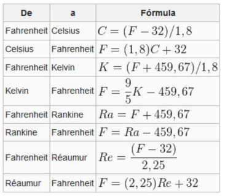

⭐⭐ Crear una función que reciba como parámetro un valor de temperatura (en Fahrenheit) y una unidad de medida y convierta esa temperatura a la unidad correspondiente.

De la tabla solo se utilizarán las conversiones de fahrenheit a...